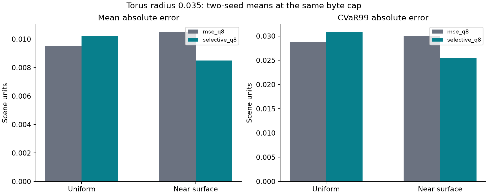
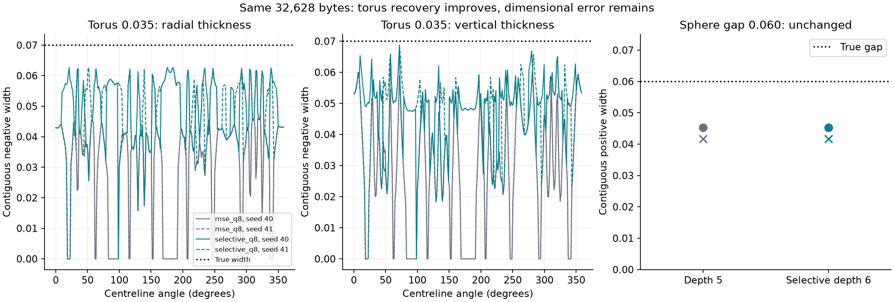

q8 and the MSE objective are fixed. Thirty-two depth-five cells ranked by fitting squared residuals gain depth-six children. Development selection used separate sizes and seeds, without generating evaluation probes. Both fresh seeds pass the frozen torus criteria; all larger controls pass. The 0.060 sphere gap remains unrecovered: MSE retains none of its deeper candidates.
Both methods occupy exactly 32,628 bytes. Torus interior recall rises from 80.08% to 99.61% / 98.44%. Closed manifold, components and Euler checks pass at both 64 and 96 extraction cells, including oracle controls. Width still differs from truth. Near-surface error improves while uniform error worsens.


Equal-weight means across seeds 40/41. Recovery requires both seeds. MAE/CVaR99 use 100,000 points per distribution per seed. Construction milliseconds include labels, candidates, refinement, allocation and packing; two serial measurements, not a timing confidence interval.
| shape | feature | method | recovered_both_seeds | bytes | inside_recall | outside_recall | uniform_mae | uniform_cvar99 | near_mae | near_cvar99 | fit_sse | retained_parents | oracle_calls | construction_ms |
|---|---|---|---|---|---|---|---|---|---|---|---|---|---|---|
| torus | 0.035 | mse_q8 | False | 32628 | 0.8007812 | 1 | 0.009511839 | 0.02875812 | 0.01050517 | 0.03002166 | 0.3190619 | 0 | 309592 | 68.248 |
| torus | 0.035 | selective_q8 | True | 32628 | 0.9902344 | 1 | 0.01020114 | 0.03084786 | 0.008488952 | 0.02543521 | 0.2857015 | 32 | 311640 | 70.9256 |
| torus | 0.06 | mse_q8 | True | 32628 | 1 | 1 | 0.009708034 | 0.02917671 | 0.007272116 | 0.02678926 | 0.2444827 | 0 | 309592 | 60.7968 |
| torus | 0.06 | selective_q8 | True | 32628 | 1 | 1 | 0.009789888 | 0.0296527 | 0.007202155 | 0.0262463 | 0.2439952 | 3.5 | 311640 | 66.6315 |
| torus | 0.1 | mse_q8 | True | 32628 | 1 | 1 | 0.009735632 | 0.02963661 | 0.006933622 | 0.02399023 | 0.2321113 | 0 | 309592 | 57.91535 |
| torus | 0.1 | selective_q8 | True | 32628 | 1 | 1 | 0.009735632 | 0.02963661 | 0.006933622 | 0.02399023 | 0.2321113 | 0 | 311640 | 63.36915 |
| double_sphere | 0.06 | mse_q8 | False | 32628 | 1 | 0.6875 | 0.009769949 | 0.02572968 | 0.00684831 | 0.01740666 | 0.2090452 | 0 | 309592 | 55.6765 |
| double_sphere | 0.06 | selective_q8 | False | 32628 | 1 | 0.6875 | 0.009769949 | 0.02572968 | 0.00684831 | 0.01740666 | 0.2090452 | 0 | 311640 | 62.0987 |
| double_sphere | 0.1 | mse_q8 | True | 32628 | 1 | 0.953125 | 0.00959709 | 0.02481236 | 0.007609832 | 0.01913406 | 0.2165014 | 0 | 309592 | 55.39875 |
| double_sphere | 0.1 | selective_q8 | True | 32628 | 1 | 0.953125 | 0.00959709 | 0.02481236 | 0.007609832 | 0.01913406 | 0.2165014 | 0 | 311640 | 60.6096 |
Zero means the analytic centre has the wrong sign, not necessarily absence of a displaced surface. Missing brackets remain missing. Truth: torus width = twice radius; sphere width = gap.
| case | method | axis | count | median | minimum | maximum | mean | zero_width | missing |
|---|---|---|---|---|---|---|---|---|---|
| torus_0.035000_40 | mse_q8 | radial | 256 | 0.03649451 | 0 | 0.04695573 | 0.03006774 | 51 | 0 |
| torus_0.035000_40 | mse_q8 | vertical | 256 | 0.03098114 | 0 | 0.06083913 | 0.02937162 | 51 | 0 |
| torus_0.035000_40 | selective_q8 | radial | 256 | 0.0478866 | 0 | 0.06270258 | 0.0487128 | 1 | 0 |
| torus_0.035000_40 | selective_q8 | vertical | 256 | 0.0503493 | 0 | 0.0687394 | 0.04821325 | 1 | 0 |
| torus_0.035000_41 | mse_q8 | radial | 256 | 0.03660525 | 0 | 0.04695573 | 0.03021236 | 51 | 0 |
| torus_0.035000_41 | mse_q8 | vertical | 256 | 0.03098114 | 0 | 0.06083913 | 0.02937162 | 51 | 0 |
| torus_0.035000_41 | selective_q8 | radial | 256 | 0.04816756 | 0 | 0.06266981 | 0.04818261 | 4 | 0 |
| torus_0.035000_41 | selective_q8 | vertical | 256 | 0.05036998 | 0 | 0.0687394 | 0.04734197 | 4 | 0 |
| torus_0.060000_40 | mse_q8 | radial | 256 | 0.1091403 | 0.1042538 | 0.1111022 | 0.1089162 | 0 | 0 |
| torus_0.060000_40 | mse_q8 | vertical | 256 | 0.1068563 | 0.09789488 | 0.119905 | 0.1073448 | 0 | 0 |
| torus_0.060000_40 | selective_q8 | radial | 256 | 0.1091403 | 0.1042538 | 0.1111022 | 0.1089162 | 0 | 0 |
| torus_0.060000_40 | selective_q8 | vertical | 256 | 0.1068563 | 0.09789488 | 0.119905 | 0.1073448 | 0 | 0 |
| torus_0.060000_41 | mse_q8 | radial | 256 | 0.1092557 | 0.1060527 | 0.1111022 | 0.1090574 | 0 | 0 |
| torus_0.060000_41 | mse_q8 | vertical | 256 | 0.1068563 | 0.09789488 | 0.119905 | 0.107362 | 0 | 0 |
| torus_0.060000_41 | selective_q8 | radial | 256 | 0.1091635 | 0.1060527 | 0.1111022 | 0.1090125 | 0 | 0 |
| torus_0.060000_41 | selective_q8 | vertical | 256 | 0.1068563 | 0.0980728 | 0.119905 | 0.1073693 | 0 | 0 |
| torus_0.100000_40 | mse_q8 | radial | 256 | 0.193607 | 0.1839497 | 0.1952276 | 0.1923134 | 0 | 0 |
| torus_0.100000_40 | mse_q8 | vertical | 256 | 0.1927046 | 0.1882211 | 0.1998202 | 0.1930718 | 0 | 0 |
| torus_0.100000_40 | selective_q8 | radial | 256 | 0.193607 | 0.1839497 | 0.1952276 | 0.1923134 | 0 | 0 |
| torus_0.100000_40 | selective_q8 | vertical | 256 | 0.1927046 | 0.1882211 | 0.1998202 | 0.1930718 | 0 | 0 |
| torus_0.100000_41 | mse_q8 | radial | 256 | 0.1935864 | 0.1859901 | 0.1952568 | 0.1922582 | 0 | 0 |
| torus_0.100000_41 | mse_q8 | vertical | 256 | 0.1927607 | 0.1889514 | 0.1998202 | 0.1931468 | 0 | 0 |
| torus_0.100000_41 | selective_q8 | radial | 256 | 0.1935864 | 0.1859901 | 0.1952568 | 0.1922582 | 0 | 0 |
| torus_0.100000_41 | selective_q8 | vertical | 256 | 0.1927607 | 0.1889514 | 0.1998202 | 0.1931468 | 0 | 0 |
| double_sphere_0.060000_40 | mse_q8 | gap | 1 | 0.04528929 | 0.04528929 | 0.04528929 | 0.04528929 | 0 | 0 |
| double_sphere_0.060000_40 | selective_q8 | gap | 1 | 0.04528929 | 0.04528929 | 0.04528929 | 0.04528929 | 0 | 0 |
| double_sphere_0.060000_41 | mse_q8 | gap | 1 | 0.04165088 | 0.04165088 | 0.04165088 | 0.04165088 | 0 | 0 |
| double_sphere_0.060000_41 | selective_q8 | gap | 1 | 0.04165088 | 0.04165088 | 0.04165088 | 0.04165088 | 0 | 0 |
| double_sphere_0.100000_40 | mse_q8 | gap | 1 | 0.09288239 | 0.09288239 | 0.09288239 | 0.09288239 | 0 | 0 |
| double_sphere_0.100000_40 | selective_q8 | gap | 1 | 0.09288239 | 0.09288239 | 0.09288239 | 0.09288239 | 0 | 0 |
| double_sphere_0.100000_41 | mse_q8 | gap | 1 | 0.0892201 | 0.0892201 | 0.0892201 | 0.0892201 | 0 | 0 |
| double_sphere_0.100000_41 | selective_q8 | gap | 1 | 0.0892201 | 0.0892201 | 0.0892201 | 0.0892201 | 0 | 0 |
Per-case results · Paired changes · Recovery thresholds · Development selection · Full cost components · Selected-cell audit · Verification · Raw/source locations and hashes
Familiar analytic shapes with fresh samples. No claim of unseen-shape generalization, exact dimensions, improved global error or temporary-memory savings. Raw fields, samples and meshes remain in the linked local runs directories and are not bundled into this compact report.